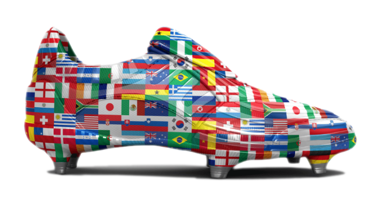
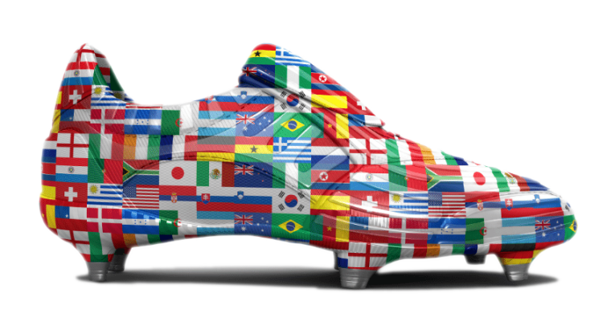
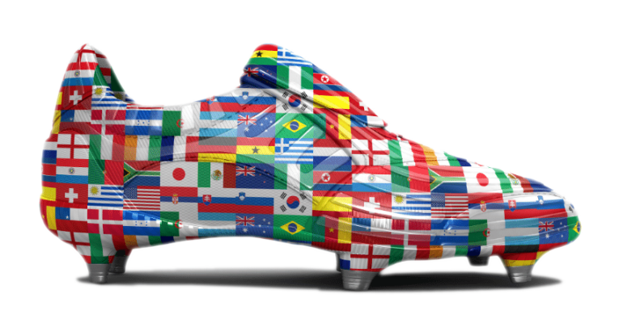
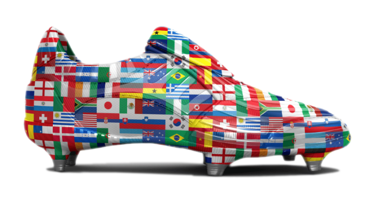
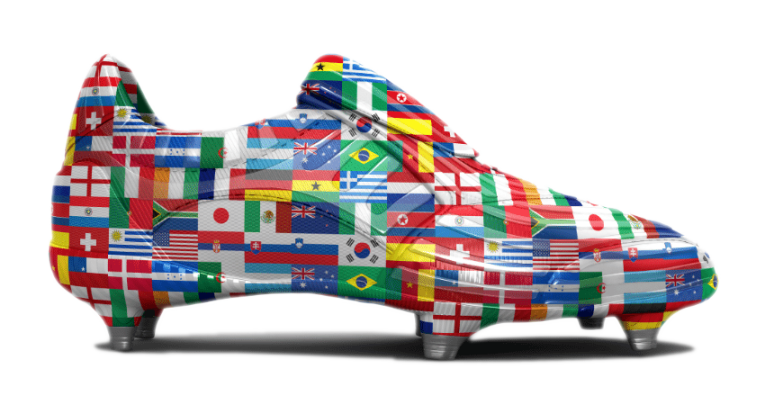

QUIZ - FIFA WORLD CUP
Which nation has won the most World Cups?
France
Brazil
England
How often is the World Cup held?
Every 4 years
Every 3 years
Every 2 years
What animal was the official mascot for the 1998 World Cup in France?
An Eagle
A Lion
A cockerel
Which African footballer is the oldest person ever to score in a World Cup?
Taribu West
Roger Milla
Rashidi Yekini
Who was the manager of the German national team when they won in 2014?
Joachim Löw
Jürgen Klinsmann
Hansi Flick
Which nation hosted the 1994 FIFA World Cup?
Japan
South African
United States of America
What musical instrument was banned by FIFA after the 2010 World Cup?
Vuvuzela
Trumpet
Violin
How many times have Italy won the World Cup so far?
4
1
3
Which British pop star performed at the opening ceremony of the 2018 tournament?
Elton John
Craig Davis
Robbie Williams
Which nation will have its World Cup debut in 2022?
Morocco
Qatar
Senegal



 


